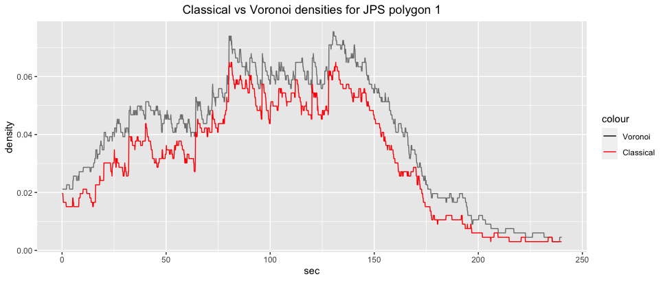

deldir_pol = readRDS("/Users/gretatimaite/Desktop/pedestrian_simulation/deldir_pol.RDS")
gcs_d_div = readRDS("gcs_d_div.RDS")
jps_deldir = readRDS("traj1_voronoi.RDS")
jps_d_div = readRDS("jps_d_div.RDS")
jps_d_sel = readRDS("jps_d_sel.RDS")8 Voronoi
Voronoi diagrams is a method to partition a 2D plane “into regions based on distance to particles in a specific set. Each region contains all the points closer to the related particle than to others.” (Xiao et al., 2016:568) Voronoi diagram divides the space (e.g., train concourse) into cells with a pedestrian in each cell (see Xiao et al., 2016). Importantly, cells change every time a pedestrian moves.
Voronoi diagrams should result in smoother plots compared to classical densities because it is possible to include those instances when part of an agent’s cell intersects with a measured area even though the agent itself (e.g. the dot) might not be in the measured area (for more see Steffen and Seyfried, 2010).
In this chapter we will plot Voronoi densities and compare them with classical densities of GCS and JPS.
9 GCS
9.1 Divided
First, let’s create a function that will intersect a measured area with polygonised deldir tiles to find out which tiles intersect with the area of interest.
Intersection means that if a tile at least touches the edge of an area, it is considered as inside an area.
For example, in the illustration below you can see all the tiles of frame 1554 that intersect with polygon 1 (in yellow). By plotting polygon 2 (in green), one can see the extension of some of the tiles in Polygon 1 to Polygon 2. Thus, some tiles would be considered as both in Polygon 1 and Polygon 2.
Indeed, the same tile could intersect with all 4 polygons.
# function
gcs_deldir_fun = function(gcs = list(), # requires polygons(s) derived from GCS environment
deldir_pol = list()){ # requires deldir polygons
sf::st_intersection(gcs, # intersects both inputs
deldir_pol)
}# let's reiterate over all the deldir tiles to find out which ones of them intersect with which polygon.
gcs_deldir1 = list()
gcs_deldir2 = list()
gcs_deldir3 = list()
gcs_deldir4 = list()
for (k in 1:length(deldir_pol)){
if (k > 43 &
k < length(deldir_pol) + 1){
gcs_deldir1[[k]] = gcs_deldir_fun(gcs = gcs_div_sf[1,],
deldir_pol = deldir_pol[[k]] / 14 ) # to metres
gcs_deldir2[[k]] = gcs_deldir_fun(gcs = gcs_div_sf[2,],
deldir_pol = deldir_pol[[k]] / 14)
gcs_deldir3[[k]] = gcs_deldir_fun(gcs = gcs_div_sf[3,],
deldir_pol = deldir_pol[[k]] / 14)
gcs_deldir4[[k]] = gcs_deldir_fun(gcs = gcs_div_sf[4,],
deldir_pol = deldir_pol[[k]] / 14)
}
}# plot 1
voronoi_density1_temp = vector()
voronoi_density1 = data.frame()
for (i in 1:length(gcs_deldir1)){
if(is.null(gcs_deldir1[[i]]) == FALSE){
voronoi_density1_temp[i] = nrow(gcs_deldir1[[i]]) / gcs_area_div[1]
voronoi_density1 = as.data.frame("x" = voronoi_density1_temp) |>
dplyr::mutate(frame = dplyr::row_number(),
sec = frame / 25)
colnames(voronoi_density1) = c("density", "frame", "sec")
}
}
ggplot2::ggplot(voronoi_density1)+
ggplot2::aes(x = sec,
y = density)+
ggplot2::geom_line() +
ggplot2::geom_line(data = gcs_d_div[[1]], color = "red")# plot 2
voronoi_density2_temp = vector()
voronoi_density2 = data.frame()
for (i in 1:length(gcs_deldir2)){
if(is.null(gcs_deldir2[[i]]) == FALSE){
voronoi_density2_temp[i] = nrow(gcs_deldir2[[i]]) / gcs_area_div[2]
voronoi_density2 = as.data.frame("x" = voronoi_density2_temp) |>
dplyr::mutate(frame = dplyr::row_number(),
sec = frame / 25)
colnames(voronoi_density2) = c("density", "frame", "sec")
}
}
ggplot2::ggplot(voronoi_density2)+
ggplot2::aes(x = sec,
y = density)+
ggplot2::geom_line() +
ggplot2::geom_line(data = gcs_d_div[[2]], color = "red")
# plot 3
voronoi_density3_temp = vector()
voronoi_density3 = data.frame()
for (i in 1:length(gcs_deldir3)){
if(is.null(gcs_deldir3[[i]]) == FALSE){
voronoi_density3_temp[i] = nrow(gcs_deldir3[[i]]) / gcs_area_div[3]
voronoi_density3 = as.data.frame("x" = voronoi_density3_temp) |>
dplyr::mutate(frame = dplyr::row_number(),
sec = frame / 25)
colnames(voronoi_density3) = c("density", "frame", "sec")
}
}
ggplot2::ggplot(voronoi_density3)+
ggplot2::aes(x = sec,
y = density)+
ggplot2::geom_line() +
ggplot2::geom_line(data = gcs_d_div[[3]], color = "red")
# plot 4
voronoi_density4_temp = vector()
voronoi_density4 = data.frame()
for (i in 1:length(gcs_deldir4)){
if(is.null(gcs_deldir4[[i]]) == FALSE){
voronoi_density4_temp[i] = nrow(gcs_deldir4[[i]]) / gcs_area_div[4]
voronoi_density4 = as.data.frame("x" = voronoi_density4_temp) |>
dplyr::mutate(frame = dplyr::row_number(),
sec = frame / 25)
colnames(voronoi_density4) = c("density", "frame", "sec")
}
}
ggplot2::ggplot(voronoi_density4)+
ggplot2::aes(x = sec,
y = density)+
ggplot2::geom_line() +
ggplot2::geom_line(data = gcs_d_div[[4]], color = "red")9.2 Selected
zone1_matrix = matrix(c(10, 28, 0, 28, 0, 10, 10, 10, 10, 28),
ncol = 2,
byrow = T)
zone1_df = zone1_matrix |> as.data.frame()
colnames(zone1_df) = c("X", "Y")
# zone1_matrix_list = list(zone1_matrix)
zone1_sf = zone1_df |> sf::st_as_sf(coords = c("X", "Y"))
zone1_comb = zone1_sf |> sf::st_combine()
zone1_pol = zone1_comb |> sf::st_cast("POLYGON")
zone2_matrix = matrix(c(53, 26, 43, 26, 43, 8, 53, 8, 53, 26),
ncol = 2,
byrow = T)
zone2_df = zone2_matrix |> as.data.frame()
colnames(zone2_df) = c("X", "Y")
# zone1_matrix_list = list(zone1_matrix)
zone2_sf = zone2_df |> sf::st_as_sf(coords = c("X", "Y"))
zone2_comb = zone2_sf |> sf::st_combine()
zone2_pol = zone2_comb |> sf::st_cast("POLYGON")
# join both zones into one sf object
zones_pol = c(zone1_pol, zone2_pol)
# convert to an sf object
zones_pol_sf = zones_pol |>
sf::st_as_sf() |>
dplyr::rename(geom = x)gcs_deldir_z1 = list()
gcs_deldir_z2 = list()
for (k in 1:length(deldir_pol)){
if (k > 43 &
k < length(deldir_pol) + 1){
# gcs_deldir_z1[[k]] = sf::st_intersection(zone1_pol, deldir_pol[[k]])
gcs_deldir_z1[[k]] = gcs_deldir_fun(gcs = zones_pol_sf[1,],
deldir_pol = deldir_pol[[k]]/14) #from pixels to metres
gcs_deldir_z2[[k]] = gcs_deldir_fun(gcs = zones_pol_sf[2,],
deldir_pol = deldir_pol[[k]] /14)
}
}# plot zone 1
voronoi_density_temp_z1 = vector()
voronoi_density_z1 = data.frame()
for (i in 1:length(gcs_deldir_z1)){
if(is.null(gcs_deldir_z1[[i]]) == FALSE){
voronoi_density_temp_z1[i] = nrow(gcs_deldir_z1[[i]]) / gcs_area_sel[1]
voronoi_density_z1 = as.data.frame("x" = voronoi_density_temp_z1) |>
dplyr::mutate(frame = dplyr::row_number(),
sec = frame / 25)
colnames(voronoi_density_z1) = c("density", "frame", "sec")
}
}
ggplot2::ggplot(voronoi_density_z1)+
ggplot2::aes(x = sec,
y = density,
col = "black")+
ggplot2::geom_line() +
ggplot2::geom_line(data = gcs_d_sel[[1]], color = "red")+
ggplot2::scale_colour_manual(
values = c("Voronoi"="black", "Classical" = "red")) +
ggplot2::labs(title="Classical vs Voronoi densities for Zone 1")+
ggplot2::theme(plot.title = ggplot2::element_text(hjust = 0.5))::: {.cell}
# plot zone 2
voronoi_density_temp_z2 = vector()
voronoi_density_z2 = data.frame()
for (i in 1:length(gcs_deldir_z2)){
if(is.null(gcs_deldir_z2[[i]]) == FALSE){
voronoi_density_temp_z2[i] = nrow(gcs_deldir_z2[[i]]) / gcs_area_sel[2]
voronoi_density_z2 = as.data.frame("x" = voronoi_density_temp_z2) |>
dplyr::mutate(frame = dplyr::row_number(),
sec = frame / 25)
colnames(voronoi_density_z2) = c("density", "frame", "sec")
}
}
ggplot2::ggplot(voronoi_density_z2)+
ggplot2::aes(x = sec,
y = density,
col = "black")+
ggplot2::geom_line() +
ggplot2::geom_line(data = gcs_d_sel[[2]], color = "red")+
ggplot2::scale_colour_manual(
values = c("Voronoi"="black", "Classical" = "red")) +
ggplot2::labs(title="Classical vs Voronoi densities for Zone 2")+
ggplot2::theme(plot.title = ggplot2::element_text(hjust = 0.5)):::

10 JPS
10.1 Divided
jps_deldir1 = list()
jps_deldir2 = list()
jps_deldir3 = list()
jps_deldir4 = list()
for (k in 1:length(jps_deldir)){
# if (k < length(jps_deldir) + 1){
jps_deldir1[[k]] = gcs_deldir_fun(gcs = gcs_div_sf[1,],
deldir_pol = jps_deldir[[k]])
jps_deldir2[[k]] = gcs_deldir_fun(gcs = gcs_div_sf[2,],
deldir_pol = jps_deldir[[k]])
jps_deldir3[[k]] = gcs_deldir_fun(gcs = gcs_div_sf[3,],
deldir_pol = jps_deldir[[k]])
jps_deldir4[[k]] = gcs_deldir_fun(gcs = gcs_div_sf[4,],
deldir_pol = jps_deldir[[k]])
# }
}# plot 1
jps_voronoi_density1_temp = vector()
jps_voronoi_density1 = data.frame()
for (i in 1:length(jps_deldir1)){
if(is.null(jps_deldir1[[i]]) == FALSE){
jps_voronoi_density1_temp[i] = nrow(jps_deldir1[[i]]) / gcs_area_div[1]
jps_voronoi_density1 = as.data.frame("x" = jps_voronoi_density1_temp) |>
dplyr::mutate(frame = dplyr::row_number(),
sec = frame / 8)
colnames(jps_voronoi_density1) = c("density", "frame", "sec")
}
}
ggplot2::ggplot(jps_voronoi_density1)+
ggplot2::aes(x = sec,
y = density,
color = "black")+
ggplot2::geom_line() +
ggplot2::geom_line(data = jps_d_div[[1]], color = "red")+
ggplot2::scale_colour_manual(
values = c("Voronoi"="black", "Classical" = "red")) +
ggplot2::labs(title="Classical vs Voronoi densities for JPS polygon 1")+
ggplot2::theme(plot.title = ggplot2::element_text(hjust = 0.5))
# plot 2
jps_voronoi_density2_temp = vector()
jps_voronoi_density2 = data.frame()
for (i in 1:length(jps_deldir2)){
if(is.null(jps_deldir2[[i]]) == FALSE){
jps_voronoi_density2_temp[i] = nrow(jps_deldir2[[i]]) / gcs_area_div[2]
jps_voronoi_density2 = as.data.frame("x" = jps_voronoi_density2_temp) |>
dplyr::mutate(frame = dplyr::row_number(),
sec = frame / 25)
colnames(jps_voronoi_density2) = c("density", "frame", "sec")
}
}
ggplot2::ggplot(jps_voronoi_density2)+
ggplot2::aes(x = sec,
y = density,
color = "black")+
ggplot2::geom_line() +
ggplot2::geom_line(data = jps_d_div[[2]], color = "red")+
ggplot2::scale_colour_manual(
values = c("Voronoi"="black", "Classical" = "red")) +
ggplot2::labs(title="Classical vs Voronoi densities for JPS polygon 2")+
ggplot2::theme(plot.title = ggplot2::element_text(hjust = 0.5))::: {.cell}
# plot 3
jps_voronoi_density3_temp = vector()
jps_voronoi_density3 = data.frame()
for (i in 1:length(jps_deldir3)){
if(is.null(jps_deldir3[[i]]) == FALSE){
jps_voronoi_density3_temp[i] = nrow(jps_deldir3[[i]]) / gcs_area_div[3]
jps_voronoi_density3 = as.data.frame("x" = jps_voronoi_density3_temp) |>
dplyr::mutate(frame = dplyr::row_number(),
sec = frame / 25)
colnames(jps_voronoi_density3) = c("density", "frame", "sec")
}
}
ggplot2::ggplot(jps_voronoi_density3)+
ggplot2::aes(x = sec,
y = density,
color = "black")+
ggplot2::geom_line() +
ggplot2::geom_line(data = jps_d_div[[3]], color = "red")+
ggplot2::scale_colour_manual(
values = c("Voronoi"="black", "Classical" = "red")) +
ggplot2::labs(title="Classical vs Voronoi densities for JPS polygon 3")+
ggplot2::theme(plot.title = ggplot2::element_text(hjust = 0.5)):::
::: {.cell}
# plot 4
jps_voronoi_density4_temp = vector()
jps_voronoi_density4 = data.frame()
for (i in 1:length(jps_deldir4)){
if(is.null(jps_deldir4[[i]]) == FALSE){
jps_voronoi_density4_temp[i] = nrow(jps_deldir4[[i]]) / gcs_area_div[4]
jps_voronoi_density4 = as.data.frame("x" = jps_voronoi_density3_temp) |>
dplyr::mutate(frame = dplyr::row_number(),
sec = frame / 25)
colnames(jps_voronoi_density4) = c("density", "frame", "sec")
}
}
ggplot2::ggplot(jps_voronoi_density4)+
ggplot2::aes(x = sec,
y = density,
color = "black")+
ggplot2::geom_line() +
ggplot2::geom_line(data = jps_d_div[[4]], color = "red")+
ggplot2::scale_colour_manual(
values = c("Voronoi"="black", "Classical" = "red")) +
ggplot2::labs(title="Classical vs Voronoi densities for JPS polygon 4")+
ggplot2::theme(plot.title = ggplot2::element_text(hjust = 0.5)):::
10.2 Selected
jps_deldir_z1 = list()
jps_deldir_z2 = list()
for (k in 1:length(jps_deldir)){
# if (k > 43 &
# k < length(deldir_pol) + 1){
# gcs_deldir_z1[[k]] = sf::st_intersection(zone1_pol, deldir_pol[[k]])
jps_deldir_z1[[k]] = gcs_deldir_fun(gcs = zones_pol_sf[1,],
deldir_pol = jps_deldir[[k]]) #from pixels to metres
jps_deldir_z2[[k]] = gcs_deldir_fun(gcs = zones_pol_sf[2,],
deldir_pol = jps_deldir[[k]])
# }
}# plot zone 1
jps_voronoi_density_temp_z1 = vector()
jps_voronoi_density_z1 = data.frame()
for (i in 1:length(jps_deldir_z1)){
if(is.null(jps_deldir_z1[[i]]) == FALSE){
jps_voronoi_density_temp_z1[i] = nrow(jps_deldir_z1[[i]]) / gcs_area_sel[1]
jps_voronoi_density_z1 = as.data.frame("x" = jps_voronoi_density_temp_z1) |>
dplyr::mutate(frame = dplyr::row_number(),
sec = frame / 25)
colnames(jps_voronoi_density_z1) = c("density", "frame", "sec")
}
}
ggplot2::ggplot(jps_voronoi_density_z1)+
ggplot2::aes(x = sec,
y = density,
col = "black")+
ggplot2::geom_line() +
ggplot2::geom_line(data = jps_d_sel[[1]], color = "red")+
ggplot2::scale_colour_manual(
values = c("Voronoi"="black", "Classical" = "red")) +
ggplot2::labs(title="Classical vs Voronoi densities for Zone 1")+
ggplot2::theme(plot.title = ggplot2::element_text(hjust = 0.5))# plot zone 2
jps_voronoi_density_temp_z2 = vector()
jps_voronoi_density_z2 = data.frame()
for (i in 1:length(jps_deldir_z2)){
if(is.null(jps_deldir_z2[[i]]) == FALSE){
jps_voronoi_density_temp_z2[i] = nrow(jps_deldir_z2[[i]]) / gcs_area_sel[1]
jps_voronoi_density_z2 = as.data.frame("x" = jps_voronoi_density_temp_z2) |>
dplyr::mutate(frame = dplyr::row_number(),
sec = frame / 25)
colnames(jps_voronoi_density_z2) = c("density", "frame", "sec")
}
}
ggplot2::ggplot(jps_voronoi_density_z2)+
ggplot2::aes(x = sec,
y = density,
col = "black")+
ggplot2::geom_line() +
ggplot2::geom_line(data = jps_d_sel[[2]], color = "red")+
ggplot2::scale_colour_manual(
values = c("Voronoi"="black", "Classical" = "red")) +
ggplot2::labs(title="Classical vs Voronoi densities for Zone 2")+
ggplot2::theme(plot.title = ggplot2::element_text(hjust = 0.5))11 Comparison
11.1 Selected
ggplot2::ggplot(voronoi_density_z1)+
ggplot2::aes(x = sec,
y = density,
col = "black")+
ggplot2::geom_line() +
ggplot2::geom_line(data = gcs_d_sel[[1]], color = "red")+
ggplot2::ggplot(jps_voronoi_density_z1)+
ggplot2::aes(x = sec,
y = density,
col = "blue")+
ggplot2::geom_line() +
ggplot2::geom_line(data = jps_d_sel[[1]], color = "purple") +
ggplot2::scale_colour_manual(
values = c("GCS Voronoi"="black",
"GCS Classical" = "red",
"JPS Voronoi" = "blue",
"JPS Classical" = "purple")) +
ggplot2::labs(title="Classical vs Voronoi densities for GCS and JPS Zone 1")+
ggplot2::theme(plot.title = ggplot2::element_text(hjust = 0.5))12 Discussion
As expected, in GCS Voronoi diagrams show higher density compared to “classical” density measure. One of the ideas behind Voronoi diagrams is that they “smooth” densities, however it’s not a case in any of them. Potentially this is because I plot them by frame (0.04 sec) instead of, e.g., second (25 frames).
Also, it is interesting to observe how much densier an Zone 1 becomes when using Voronoi diagram to quantify density. While classical density measure shows that there periods of no agents in Zone 1 are common, these periods basicaly disappear when Voronoi diagram is applied. My suspicion is that because Zone 1 is close to the shopping windows, pedestrians walk by and/or stop there for a “window shopping” but do not always physically enter Zone 1 but their Voronoi cells do intersect.
Interestingly, in the context of JPS, density in Zone 1 also increases much more significantly compared to Zone 2. Zone 1 looks like experiencing similar changes as Zone 1 in GCS: periods where only 1 (or none) agent is present are gone; if classical density shows that agents disappear at approx 55th second, then Voronoi demonstrates agent movement until the end of simulation. Potential reason for this is that there are 5 agents that are not evacuated, thus at least one agent’s cells intersects with Zone 1 (indeed, the same could be applied to Zone 2).
A thought re Voronoi diagrams for GCS: let’s say, there are 10 agents in the env at a given time. 8 of them are clustered on the right handside but 2 agents are on the left. Thus, these two agents will have their cells joined to those on the right (maybe not to each), hence increasing the density even though the agents (not their cells) might be far away from the measured area.
What could be done next?:
- Aggregating data into seconds rather than frames could help to overcome some of the “spiking” present in data.
- It could be useful to come up with an (arbitrary) number of agents that need to be present in the environment to avoid “catching” instances when a cell of an agent far from the measured area intersects. While this might be a good solution for simulated data, problematically, however, this might not be a good solution for GCS data which has a great number of frames with only several agents.
Maybe for lower densities (how would one define “low density”?) classical density measure is enough?